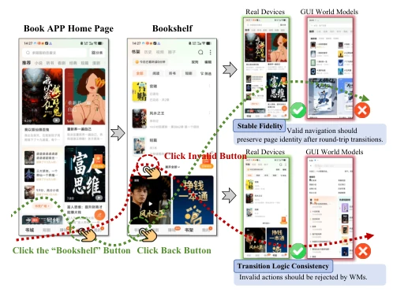
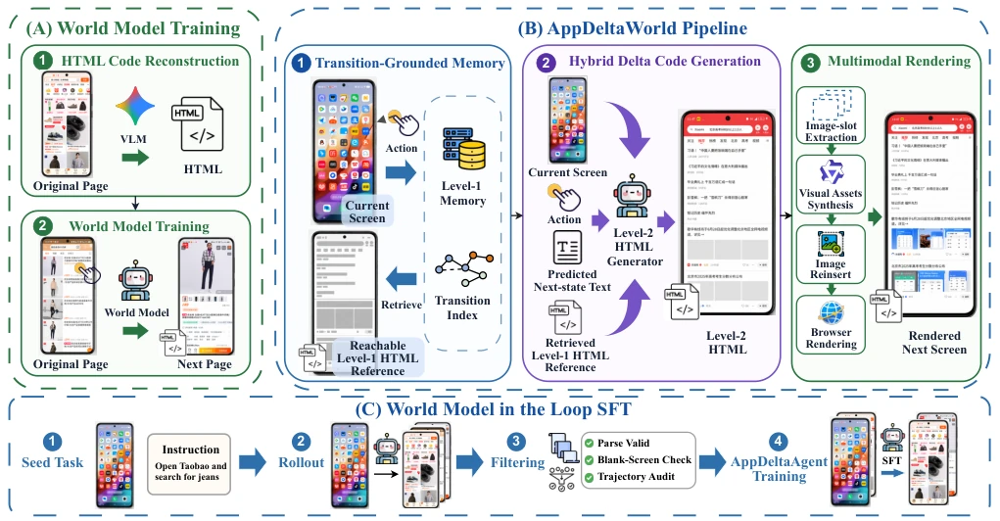

This paper attempts to address the chronic issue of GUI world models "hallucinating". AppDeltaWorld does not directly render pixels, but generates executable HTML code increments, then completes the images. This approach is quite clever, using code to preserve structure and diffusion models to preserve visual fidelity, attempting to find a balance between fidelity and logical consistency. However, relying on HTML reconstruction may not be well-suited for certain native apps, as not all interfaces can be perfectly translated into DOM. Experimentally, it beat GPT-Image-2 on CMGUIBench, but the improvement of the Agent in the real environment (MobileWorld) was limited, indicating that synthetic data still has boundaries and cannot fully replace real device debugging. The RL part is somewhat interesting, utilizing the world model for self-scoring, but the consensus reward mechanism is not yet stable enough and is easily affected by rendering noise. Overall, it is a relatively pragmatic work in GUI world models, suitable for data augmentation, but do not expect it to completely replace the real interaction environment, as there is a chasm of browser rendering between the "code world" and "real phones", and it relies heavily on specific apps.
研究动机Motivation
移动 GUI 智能体需要大量交互数据，但敏感应用和隐私操作导致真实轨迹难以获取（Cao et al. 2026a）。现有模拟器扩展成本高，而现有 GUI 世界模型存在三大痛点：生成不稳定、模态覆盖不全、动作转换逻辑不一致（如图 1 所示）。特别是模型容易在无效动作上产生幻觉，导致轨迹断裂。现有工作如 MobileWorld 虽尝试预测状态，但缺乏对动作逻辑的显式约束。因此，需要一种能约束动作逻辑、兼顾结构与视觉保真度的世界模型，以支持闭环训练。这不仅能解决数据稀缺问题，还能让 Agent 在训练时学会“拒绝无效操作”，提升长程任务的鲁棒性。真实环境评估（Kong et al. 2026）也表明，仅靠公开数据训练的 Agent 在复杂任务上表现不佳，亟需高质量合成数据补充。
Mobile GUI agents require large amounts of interaction data, but sensitive applications and privacy operations make real trajectories difficult to obtain (Cao et al. 2026a). Existing simulators have high expansion costs, while existing GUI world models have three major pain points: unstable generation, incomplete modality coverage, and inconsistent action transition logic (as shown in Figure 1). Especially, models tend to hallucinate on invalid actions, leading to trajectory breaks. Existing work like MobileWorld attempts to predict states, but lacks explicit constraints on action logic. Therefore, a world model that can constrain action logic and balance structure and visual fidelity is needed to support closed-loop training. This not only solves the data scarcity problem but also allows the Agent to learn to "reject invalid operations" during training, improving robustness for long-horizon tasks. Real environment evaluation (Kong et al. 2026) also shows that Agents trained solely on public data perform poorly on complex tasks, urgently needing high-quality synthetic data supplementation.

Figure 1: Poor fidelity (upper) and inconsistent action inter- action logic (lower) problems in GUI world models.
The core is "transition grounded" Delta code generation. The pipeline is divided into three steps: 1. Retrieval: Map the current screen to a Level-1 HTML structure, retrieve reachable target structure clusters based on action constraints (Transition Index) to avoid fabricating structures. This step utilizes the RAG mechanism to ensure the generated page structure exists in real apps, distinguishing layout and details through hierarchical clustering (Level-1/Level-2). 2. Generation: Based on the retrieved Level-1, generate Level-2 executable HTML increments, while filling image slots with text descriptions. Here, a Diffusion model is introduced to handle visual assets, solving the problem that pure code cannot express complex images, achieving mixed generation of code and images. 3. Rendering: Render HTML via browser engine, and synthesize visual assets using diffusion models. Finally, use this model to generate closed-loop trajectories for Agent's SFT and RL training, forming a "world model inner loop". This hierarchical design ensures layout stability while retaining visual richness, representing a typical "code + image" mixed generation paradigm, effectively alleviating the drift problem of traditional generative models in UI layout.

Figure 2: Overview of AppDeltaWorld: (A) original mobile pages are reconstructed as HTML to train the world model; (B) transition-grounded memory retrieves an action-reachable Level-1 HTML reference that guides hybrid delta code generation and multimodal rendering of the next GUI; and (C) filtered closed-loop rollouts are converted into SFT data for AppDeltaAgent.
On CMGUIBench-500, AppDeltaWorld scored 73.51, surpassing baselines like GPT-Image-2, proving the advantage of mixed modalities. As a training environment, AppDeltaAgent achieved AMS of 90.28 on AndroidLens, and SR 14.1% on MobileGym (an increase of 38.2%). MobileWorld real environment testing also shows GUI-only SR increased to 14.9%. Ablation experiments prove RAG and Diffusion are indispensable; removing RAG leads to a significant drop in logic scores. RL experiments show the model supports test-time policy fine-tuning, AMS improved on specific apps, but consensus reward stability still has room for improvement, some update groups had no unique winner. Data expansion experiments show that mixing synthetic data with public data yields the best results; pure synthetic data actually performs worse, indicating a need for guidance from real distributions. This indicates that although synthetic data is good, it cannot completely detach from the distribution characteristics of real data; mixed training is the current optimal solution.